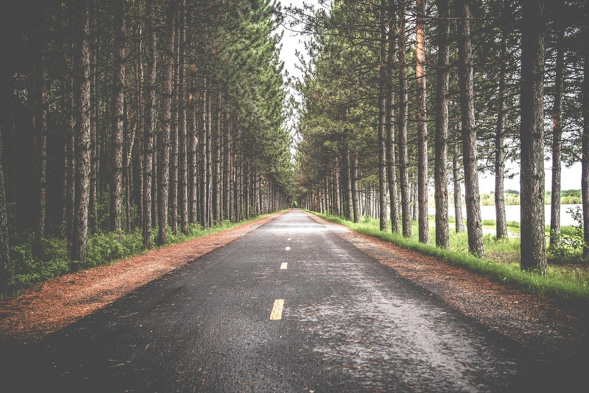

I’m a curious Python Bootcamp student (graduating in May 2021) making a transition into an IT career. I discovered my interest in web development while I was working as a project manager at this amazing company. I was offered the opportunity to lead the process of rebuilding their website and upgrade their online presence.
I had no idea that rebuilding a new online store can be as complex, detailed and time-consuming as it was. We were faced with so many challenges along our way but this is what made the whole process captivating as we had to put our best problem-solving skills to work.
As stated previously, working on their new website made me realize my interest in web development. I had the chance to work closely with their e-commerce development partner and I found myself wondering what do those web developers actually do? How do they build things and turn all those ideas of a client into reality or code rather. So I made a decision to look into this new interest of mine a bit more in detail and see where this road would take me.

In May 2020, I joined Treehouse - an online learning platform for coding. I hopped on board with their Python track and also their Front End Web Development track which I both completed successfully. As I had found my new passion I wished to take my studies further and enrolled in a 9-month Python bootcamp in September 2020.
Alongside my bootcamp studies I also take the course " CS50's Web Programming with Python and JavaScript"
There are tons of online learning platforms out there to choose from when it comes to programming. How do you pick the one that suits you the most? I did a lot of research on the web and I found Treehouse.
What I like the most is that they have a really clear structure to learning different topics. All courses are highly interactive which means you'll have workshops, quizzes, practice sessions and code challenges regularly following each lesson in a course. You'll start building projects from day one.
Either you wish to take just one quick course on a specific topic or complete an entire track or sign up for a bootcamp-style Techdegree - the choice is yours and the options are pretty much limitless! They have a 7-day free trial as well so check it out - what have you got to lose? 😊
Here's just to name a few new exciting skills you can gain by learning on Treehouse:
Interested in front end or back end or something else - they've got you covered! For instance, you can also learn about:
The whole staff on Treehouse is really dedicated and they will support you throughout your learning process.
So what are you waiting for? 😊 Oh yes, before you head off to Treehouse, please do read about the #100DaysOfCode challenge in the next chapter which I took with Treehouse. 👇
As I started my Python studies at Treehouse in May 2020 I noticed this banner when I logged in:

It got my interest and I decided to find out more about it. Didn't take that long for me to hop on board and join the challenge! 😊 The basic idea is that you code for 100 days in a row and either tweet or use other social media sites to let others know about your progress. Small breaks are allowed, of course. I went kind of crazy and literally coded for 100 days straight which I do not recommend. 🤯
I'm not particularly the social media type and you can't find me on Facebook, Instagram etc... (yes, life is possible without these sites 😊) but in order to participate in this challenge I made myself an account on Twitter and tagged Treehouse every day tweeting about my progress (sorry, Treehouse! 😳). On August 31st my challenge was completed and I received this acknowledgement from Treehouse:

My final thoughts and overall summary on the challenge can be found here.
By now I have also completed my 2nd round of the #100DaysOfCode - seriously! 😊 Started in September 2020 and finished in December 2020. I had plenty of breaks to avoid burning out which helped to keep my mind fresh.
👉 It is really important to start building your own projects based on your new knowledge and take those training wheels off as soon as possible. You should also showcase your projects, no matter how small or big!